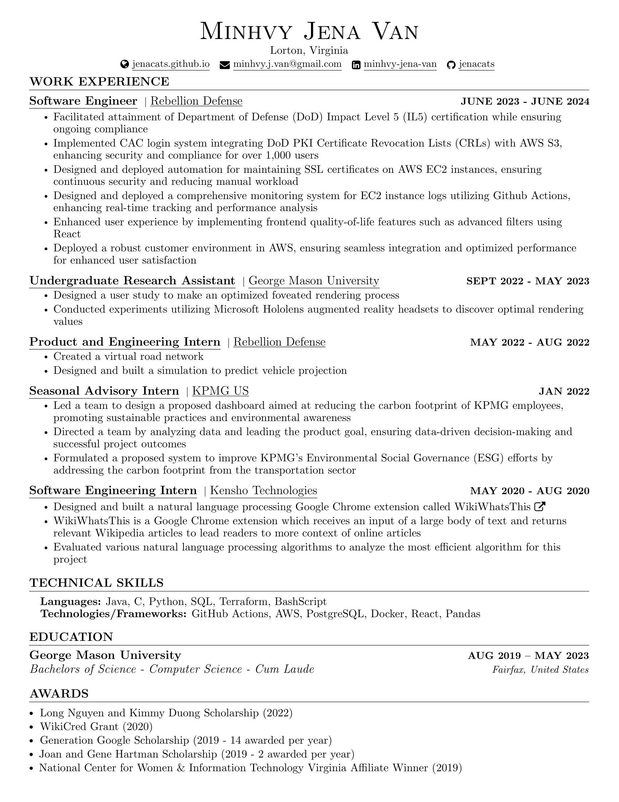
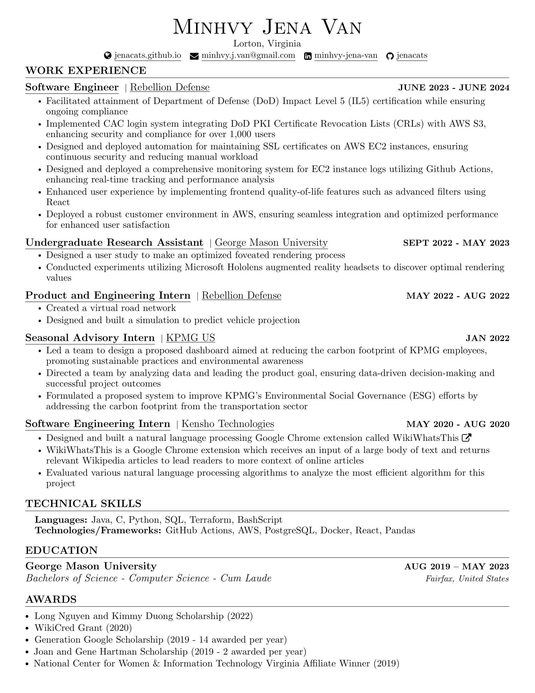

Minhvy Jena Van
Hi! I'm a Software Engineer with a BS of Computer Science from George Mason University. I have previously worked at Rebellion Defense, George Mason University, and Kensho Technologies. In my free-time I do Olympic Weightlifting and run an art business .
See my Resume
 Resume PDF

Resume PDF

In Fall 2022, I was an Undergraduate Research Assistant under Professor Bo Han.
We were creating a machine learning model for foveated rendering to be used with augmented reality
and virtual reality. Foveated rendering significantly reduced the bits needed to be sent by lowering
the quality of the object or volumetric video where the user was not looking. By using eye tracking,
the points where the user was looking were high quality, while the other parts were low quality.
I conducted experiments utilizing Microsoft Hololens augmented reality headsets to discover
optimal rendering values.
Figure 1. Illustration of foveated rendering of volumetric videos with multiple users.
In the Summer of 2022, I interned at Rebellion Defense and created a virtual
road network in order to then predict object movement along the roads. Such objects could be
a car or a truck. The origin of this project was in response to the Ukraine and Russia
conflict in early 2022. This application could be used for predicting tank
movement and evacuate citizens from predicted areas.
For this project, I utilized PostgreSQL and Open Street Maps. In order to
predict object movement, I decided to utilize a Monte Carlo method which uses
meta data like speed limit and total number of roads.
Figure 2. Satellite image of Russian tanks occupying Ukraine
In the Summer of 2020, I interned at Kensho Technologies and built a
natural language processing Google Chrome extension called WikiWhatsThis.
WikiWhatsThis is a Google Chrome extension that receives input from a large body of text and returns
relevant Wikipedia articles to lead readers to more context of online articles.
This Google Chrome extension was created in order to combat news articles
which usually provide narrow information about developing stories. For this project,
I evaluated various natural language processing algorithms to analyze the most efficient algorithm for this
project. The final model was an explicit topic model using BM25 instead
of TF-IDF.
Figure 3. Screenshots of WikiWhatsThis presentaion and demo
Contact me
Email: minhvy.j.van@gmail.com